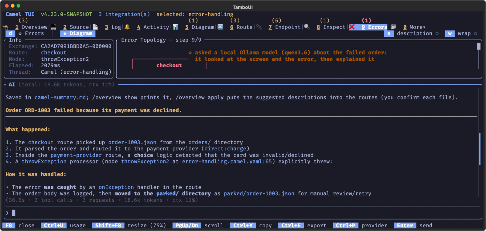

Camel TUI AI Panel
The AI panel (F8) lets you ask about your integrations in plain language: the AI sees what the TUI sees, reads the sources and the catalog, and can change files with your confirmation. It works with hosted models and with local models through Ollama, so nothing has to leave your machine (see Local Models).
See Camel TUI for getting started and the other pages.
Key Features
-
Any provider — a hosted model or a local one through Ollama or an OpenAI-compatible server
-
Slash commands — run examples, change settings and steer the AI from the panel
-
Project overview — the AI explains the project once and the diagram shows it as capabilities
-
AI log — what was asked, which tools ran and what they returned
-
Local models — Ollama or an OpenAI-compatible server on your own machine
Choosing an AI provider
Press F8 to open the built-in AI prompt panel. The panel detects the provider from the environment (ANTHROPIC_API_KEY, OPENAI_API_KEY, GEMINI_API_KEY, a local Ollama, and others) the same way as camel ask; the order is listed in AI Providers and Local Models.
Press Ctrl+P inside the AI panel to switch provider or model at any time.
A question can span several lines: Ctrl+N starts a new line (terminals deliver Shift+Enter and Alt+Enter as a plain Enter, so they cannot be used), pasted text keeps its line breaks, and Up and Down move between the lines of the question before they recall earlier prompts. Enter sends it.
The same guidance, together with the provider that is currently detected, is available inside the TUI via F2 → AI & MCP → Setup AI. Use F2 → Settings to pin a provider, model or base URL (camel.tui.ai.provider, camel.tui.ai.model, camel.tui.ai.url) regardless of the environment. camel.tui.ai.acp.command sets the command line of the custom ACP agent (acp:custom).

To run the model on your own machine, with Ollama or an OpenAI-compatible server such as LM Studio, see Camel TUI Local Models: which models work well, the tool set they get, what a question costs and the Ollama tab.
AI panel slash commands
When the AI panel is open, input that starts with / runs a local panel command instead of sending a question to the configured AI provider. /provider and /model are unavailable while a response or command is already in progress; the panel shows a message asking you to wait.
Press Tab to complete a command name. After /model Tab completes the model name against the models the current provider reports (the list is fetched in the background on the first press, so press Tab again once it has arrived), and after /tools ` it completes `auto, core or full. With several matches Tab fills in the common prefix and then cycles through them; Shift+Tab cycles backward.
| Command | Description |
|---|---|
| Show the available slash commands. |
| Open the provider switcher. |
| Show the current model, or switch the session model. |
| Show or switch how file writes by the model ( |
| Show which tool set is sent to the model, or switch it. |
| Show what the next request costs: provider and model, tool set, static prefix size, history size and the session total, and with Ollama the context window, the prompt size above which the history is compacted and the last measured prompt. Useful with local models, where prompt size is time. |
| Shrink the conversation history sent to the model right away: older tool results are cut to their first lines and the oldest turns are dropped. With a hosted provider the panel does this automatically after each answer for all but the latest turn. With Ollama or another |
| Send the last question again, starting from a clean turn in the model history. |
| Print the AI usage so far in the chat: requests, tokens in and out, average latency, one line per model (and per route when GenAI spans are observed), and the last request. Ctrl+U opens the full view with the per-question chart. |
| The same as Ctrl+Y (copy the last response) and Ctrl+E (export the conversation to Markdown). Copying is code-aware: when the response has one fenced code block only the code is copied (without the fences and the prose, which is what selecting it with the mouse cannot give you because of the panel borders); when it has several, a picker lists the blocks with their language and size plus the whole response; when it has none, the whole response is copied. |
| Show the system prompt the panel sends with every request. |
| Clear the AI conversation, usage counters, and model context without changing the provider or model. |
| Close the AI panel. |
| Exit the TUI. |
| Run |
| Run |
| The AI project overview of the selected integration’s project: without an argument it shows the summary when it is up to date and asks the model to explain the project otherwise; |
| Send a message through |
AI project overview
A route diagram of many routes becomes spaghetti quickly, above all when the routes have no description. /overview asks the model to explain the project of the selected integration (or the folder the TUI runs in): an overview of what it does, the business capabilities its routes implement, and a description of each route that has none. The facts come from the route sources, the same ones camel overview prints (see Project overview): routes, entry points, how routes connect, external systems and findings. The model gets them with excerpts of the routes (values of passwords, tokens and other sensitive options masked) in one request without tools, so a local model does it as well as a hosted one. It runs in the background and the answer appears in the panel.
The answer is saved in camel-summary.md in the project directory, a Markdown file you can read, review and commit. The TUI treats it as the project’s generated README: /overview show, or s in the Diagram tab, opens it rendered in the document viewer (t lists its sections), at the routes from the topology and at the Architecture section from the architecture view. The title says when the routes changed since the AI wrote its part. A project without a summary gets the facts derived from its sources, with a note on how to add the AI part. In the Overview tab a project with a summary shows the 📖 mark, as one with a README does. Its AI-assisted sections are marked ✦ AI-assisted and kept apart from the sections derived from the sources, and the file records the model, the date and a fingerprint of the routes, so the TUI knows when the routes changed afterwards: /overview then explains them again.
A route description comes in two parts: a short label, and a note of a sentence or two, the description and note of a route in the DSL. The model writes both for a route that lacks them.
What an AI wrote is never shown as if it came from the source or the runtime. When a route has no description of its own, the Routes tab (with descriptions on, n) and the topology in the Diagram tab show the suggested label in italic, in the ai-assisted theme color, marked with ✦. The Info panel beside the topology shows the whole label and note of the selected route, word-wrapped, the AI-assisted parts marked the same way. Once you agree with them, /overview apply puts the suggestions into the route sources (description and note in YAML and XML, .routeDescription(…) and .routeNote(…) in Java); each changed file goes through the confirm dialog with its diff, whatever the /write mode. From then on they are part of the routes and no longer marked.
With AI Overview set to auto in F2 → Settings, the panel explains the project by itself when it opens and the summary is missing or out of date, once per project state. It starts once the panel has been idle for a few seconds, so a question asked right away is answered first. A local model answers one request at a time: a question asked while the summary is being written waits for it, and the panel says so; Esc then stops the summary so the question goes first (/overview writes it later). External AI agents get the same through the camel_project_overview and camel_save_project_summary tools; from the TUI’s MCP server the summary they save goes through the confirm dialog too.
Submitted prompts (including slash commands) participate in AI prompt history when camel.tui.ai.promptHistory is not 0. Use ↑/↓ on the prompt line to recall them.
Every answer ends with a byline saying what the question cost: the time it took, how many tools the model called and the time spent in them, the number of requests, the tokens and, with Ollama, how full the context window got (for example 61.1s · 25 tool calls, limit reached (2.5s in tools) · 26 requests · 231.3k tokens · ctx 18%). The panel allows 25 tool calls per question. When the model reaches that the byline says limit reached, the panel asks the model to answer from what it has found so far, and the Ollama tab shows the question’s request count in red with limit as its reason (the count is yellow from 10 requests, and the total time yellow from 30 seconds and orange from a minute). A question that runs into the limit is usually a tool that makes the model guess, not a weak model: the AI log shows which one.
What the model says is checked like what it writes. A file goes through the validator before camel_write_file writes it; the answer shown in the chat is what you copy, so its simple expressions are checked against the catalog too: the ${…} placeholders in the text and in Java or XML code blocks, and the simple: values and log messages of YAML blocks. A small model tends to put the operator inside the placeholder (${header.user ?: 'Guest'} instead of ${header.user} ?: 'Guest'). When the check finds such an expression the panel sends the answer back to the model once, with what is wrong and the rule, and shows the corrected answer with 1 correction in the byline. When the model does not fix it the answer is shown as it is with a Simple check line under it naming the expression and the error, and the AI log has the exchange. Placeholders that are not simple (a Maven ${camel-version}, a shell variable) are left alone.
Press Ctrl+U while the AI panel is open to toggle the AI Usage view. It shows token consumption from the embedded AI prompt (TUI ask) and from LLM calls made by the monitored integration (integration), the latter taken from OpenTelemetry GenAI spans when observability is enabled on the integration. The Tokens per question chart has one bar per question you asked, so a question that needed several tool calls shows as a single bar. The summary line splits the session time into AI time (waiting for the model) and Tool time (running the TUI tools the model called, with the number of calls), the summary line gives the average time per question (and per request in brackets), the model table has an AVG/REQ column with the average per request for that model, and the Time per question chart next to the token chart shows the two side by side for each question, so you can see whether a slow answer was the model or the tools.
AI log
Every request the panel makes is recorded in the AI log (F2 → AI & MCP → AI Log, or the tui_get_ai_log tool): the question, each tool the model called with its arguments, the result with how long the tool took, and a Response line with the elapsed time and the token counts. When the model called tools, the elapsed time is broken down into the time spent waiting for the model and the time spent in tool calls (for example 5.2s, ai 4.1s, tools 1.1s/3). The Response line also shows whether the provider reused its cached prompt. For Ollama it prints the prompt-processing (prefill) and generation (gen) time reported by the server — a prefill of a fraction of a second on a 10k-token prompt means the cache was hit, while a prefill of several seconds means the whole prompt was processed again. For OpenAI, Anthropic and Gemini it prints the number of cached input tokens the provider reported. Use it to check that follow-up questions are cheap before blaming the model for being slow.